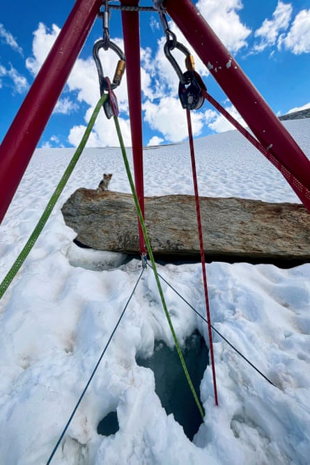

A small pet dog is being hailed as a “four-legged hero” for helping to save his owner’s life after he fell down an icy crevasse in the Swiss Alps.
The Air Zermatt helicopter company credited the pint-sized pooch with drawing their attention to the location of the hiker, who was extracted and taken to hospital.
Rescuers abseiled down the hole to the man and lifted him to safety while his pet looked on.Photograph: AP
The pair had taken a walk on the Fee glacier above Saas-Fee near the Italian border on Friday afternoon when the man “suddenly broke through a snow bridge”, Air Zermatt said, sending him plunging into the 8 metre-deep crevasse.
“While the man was stuck in the glacier ice, his faithful companion … was left at the edge of the crevasse,” the company said, recounting what it called an “extraordinary” mission.
Air Zermatt described the dog as a chihuahua, though based on the pictures it released, the German newspaper Bild raised the possibility that the dog may in fact be a papillon, a type of spaniel.
The hiker was carrying an amateur walkie-talkie, which he used to call for help. A person nearby picked up but had difficulty pinpointing the man’s location, at an elevation of about 3,200 metres.
Air Zermatt dispatched a crew with three rescue specialists in the direction of the Fee glacier, but the collapse site was hard to find given the breadth of the glacier’s surface and the small size of the hole.
“Then a decisive moment: one of the rescue specialists spotted a small movement on a rock: the chihuahua!” the company said.
The shivering dog barked from a perch next to the hole through which its owner had fallen, allowing rescuers to abseil down and lift the man to safety while his pet looked on. Both he and the dog were then flown to a local hospital.
“The dog is a four-legged hero who may have saved his master’s life in a life-threatening situation,” Air Zermatt said.
Teams from Air Zermatt had warned in March about the danger to hikers posed by crevasses, reporting seven rescue missions within two weeks.
St Bernards, weighing in at many times the size of a chihuahua or papillon, are the most common mountain rescue dogs in the Alps, famed for their valour in avalanches and other disasters. They are credited with saving about 2,000 travellers over the past two centuries on the St Bernard Pass on the border with Italy. However, because they tend to be slow and expensive to feed, many have been replaced over the years by helicopters and heat sensors.